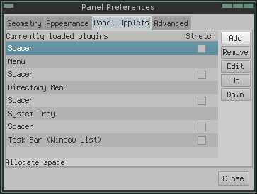
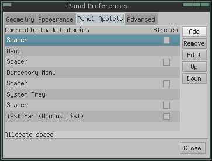

lang fr|gb

les panels
livarp utilise tint2 dans openbox et lxpanel dans pekwm.
lxpanel
lxpanel est utilisé dans la session pekwm du livarp. il a l'avantage d'inclure un gestionnaire de configuration en mode graphique déclenché au clic-droit sur le panel. vous pouvez l'utiliser dans d'autres sessions, mais il ne conviendra pas pour les sessions en tiling (dwm, ratpoison, spectrwm, wmfs, awesome).

le menu de configuration de lxpanel est détaillé et explicite:

 
 
tint2
tint2 est un panel multi-fonction qui a de plus en plus de succès. il est léger, rapide et hautement configurable. il est indépendant et s'intègre dans quasi tous les gestionnaires de fenêtres. c'est le panel par défaut de la distribution crunchbanglinux sur openbox et je l'utilse sur livarp pour la session openbox dans son mode tasklist.
configuration
la configuration de tint2 peut se faire en GUI grâce à tint2conf, mais je ne vous le conseille pas. le logiciel fonctionne bien mais son organisation prête à confusion et de nombreux utilisateurs ont effacés leurs configurations préférées avec tint2conf. nous allons donc configurer tint2 "à l'ancienne", en éditant son fichier de configuration.
notez que vous pouvez lancer plusieurs instances de tint2 avec leurs configurations respectives.
pour l'exemple, nous prendrons le fichier de configuration du tint2 de crunchbanglinux (plus d'options utilisées que pour livarp):
l'avantage de tint2 est que vous pouvez tout configurer: l'apparence, la position, les widgets, la disposition interne au panel, les actions de la souris sur le panel…. alors allons-y: voici le fichier de configuration correspondant à l'image ci-dessus:
#--------------------------------------------- # TINT2 CONFIG FILE #--------------------------------------------- # For more information about tint2, see: # http://code.google.com/p/tint2/wiki/Welcome # # For more config file examples, see: # http://crunchbanglinux.org/forums/topic/3232/my-tint2-config/ # Background definitions # ID 1 rounded = 0 border_width = 0 background_color = #ffffff 5 border_color = #828282 0 # ID 2 - task active rounded = 1 border_width = 0 background_color = #d8d8d8 30 border_color = #d8d8d8 30 # ID 3 - task rounded = 1 border_width = 0 background_color = #000000 0 border_color = #000000 0 # ID 4 rounded = 1 border_width = 1 background_color = #888888 20 border_color = #ED2323 60 # ID 5 - taskbar rounded = 0 border_width = 1 background_color = #000000 0 border_color = #000000 0 # ID 6 - active taskbar rounded = 0 border_width = 1 background_color = #d8d8d8 8 border_color = #d8d8d8 0 # ID 7 - tooltip rounded = 3 border_width = 0 background_color = #222222 90 border_color = #222222 90 # ID 8 rounded = 1 border_width = 1 background_color = #888888 20 border_color = #888888 20 # Panel panel_monitor = all panel_position = top center horizontal panel_items = LTSC panel_size = 100% 30 panel_margin = 0 -1 panel_padding = 0 0 panel_dock = 0 wm_menu = 1 panel_layer = bottom panel_background_id = 1 # Panel Autohide autohide = 0 autohide_show_timeout = 0.3 autohide_hide_timeout = 1.5 autohide_height = 6 strut_policy = follow_size # Taskbar taskbar_mode = multi_desktop taskbar_padding = 6 0 6 taskbar_background_id = 5 taskbar_active_background_id = 6 taskbar_name = 1 taskbar_name_background_id = 0 taskbar_name_active_background_id = 0 taskbar_name_font = Liberation Sans 9 taskbar_name_font_color = #828282 100 taskbar_name_active_font_color = #828282 100 # Tasks urgent_nb_of_blink = 20 task_icon = 1 task_text = 0 task_centered = 1 task_maximum_size = 40 40 task_padding = 2 2 task_background_id = 3 task_active_background_id = 2 task_urgent_background_id = 4 task_iconified_background_id = 3 # Task Icons task_icon_asb = 80 0 0 task_active_icon_asb = 100 0 0 task_urgent_icon_asb = 100 0 0 task_iconified_icon_asb = 80 0 0 # Fonts task_font = Liberation Sans 06_55 6 task_font_color = #828282 60 task_active_font_color = #828282 100 task_urgent_font_color = #FFFFFF 100 task_iconified_font_color = #d8d8d8 60 font_shadow = 0 # Launcher launcher_padding = 8 4 4 launcher_background_id = 0 launcher_icon_size = 24 # Specify icon theme names with launcher_icon_theme. # if you have an XSETTINGS manager running (like xfsettingsd), tint2 will follow your current theme. launcher_icon_theme = gnome-colors-statler # Each launcher_item_app must be a full path to a .desktop file launcher_item_app = /usr/share/applications/terminator.desktop launcher_item_app = /usr/share/applications/Thunar.desktop launcher_item_app = /usr/share/applications/geany.desktop launcher_item_app = /usr/share/applications/iceweasel.desktop # System Tray systray = 1 systray_padding = 4 2 3 systray_sort = ascending systray_background_id = 0 systray_icon_size = 24 systray_icon_asb = 100 0 0 # Clock time1_format = %H:%M:%S time1_font = Liberation Mono 10 #time2_format = %A %d %B #time2_font = Liberation Sans 6 clock_font_color = #828282 100 clock_padding = 12 4 clock_background_id = 0 clock_lclick_command = gsimplecal clock_rclick_command = gsimplecal # Tooltips tooltip = 1 tooltip_padding = 2 2 tooltip_show_timeout = 0.0 tooltip_hide_timeout = 0.0 tooltip_background_id = 7 tooltip_font_color = #d8d8d8 100 tooltip_font = Liberation Sans normal 9.0 # Mouse mouse_middle = none mouse_right = toggle mouse_scroll_up = toggle mouse_scroll_down = iconify # Battery battery = 1 battery_low_status = 20 battery_low_cmd = notify-send "battery low" battery_hide = 96 bat1_font = Liberation Sans 10 bat2_font = Liberation Sans 8 battery_font_color = #FFFFFF 100 battery_padding = 2 0 battery_background_id = 0 # End of config
détaillons à présent ce fichier: il est organisé par sections contrôlant chacune une partie de tint2:
- # backgrounds definitions: réglage des fonds et bordures de tint2, chaque 'ID' peut être assigné à une ou plusieurs parties de tint2.
- rounded: taille en pixel de l'arrondi des angles (0=angle droit)
- background_color: couleur et pourcentage d'opacité de l'arrière plan
- border_width: epaisseur de la bordure
- border_color: couleur et pourcentage d'opacité de la bordure
- # panel: position et disposition du panel
- panel_monitor: écran d'affichage et de gestion de tint2, mettre sur 'all' pour un affichage sur les différents écrans.
- panel_position: placement sur l'écran sous la forme 'place' 'alignement' 'disposition'
- panel_items: organisation du panel, 'L'launcher - 'T'askbar - 'S'systray - 'B'batterie - 'C'clock
- panel_size: taille du panel sous la forme 'largeur' 'hauteur'
- panel_margin: décallage au bord d'écran sous la forme 'marge horizontale' 'marge verticale'
- panel_padding: marge intérieure à tint2 sous la forme 'marge horizontale' 'marge verticale' 'espace entre les éléments'
- panel_dock: traite tint2 comme un dock (0 non, 1 oui)
- wm_menu: un clic-droit affiche le menu du gestionnaire de fenêtres si il existe (0 non, 1 oui)
- panel_layer: profondeur du panel sous la forme 'bottom'en-dessous - 'normal'normal - 'top'au-dessus
- panel_background_id: background appliqué au panel
- # panel autohide: propriétés du masquage automatique
- autohide: 0 non - 1 oui
- autohide_show_timeout: delai d'affichage de tint2
- autohide_hide_timeout: delai de masquage de tint2
- autohide_height: taille de tint2 masqué en pixels
- strut_policy: conditions d'affichage sous la forme 'follow_size' suit la taille des fenêtres maximisées - 'minimum' utile avec de l'autohide - 'none' aucune
- # taskbar: réglages de la barre de tâches
- taskbar_mode: 'single_desktop' ne gère qu'un bureau - 'multi_desktop' gère tous les bureaux
- taskbar_padding: marge intérieure à la taskbar sous la forme 'marge horizontale' 'marge verticale' 'espace entre les tâches'
- taskbar_background_id: background appliqué à la barre de tâche
- taskbar_active_background_id: background appliqué à la barre de tâche active
- taskbar_name: afficher le nom du bureau (O non, 1 oui)
- taskbar_name_background_id: background appliqué au nom du bureau
- taskbar_name_active_background_id: background appliqué au nom du bureau actif
- taskbar_name_font: police utilisée pour le nom du bureau
- taskbar_name_font_color: couleur et pourcentage d'opacité du texte du nom du bureau
- taskbar_name_active_font_color: couleur et pourcentage d'opacité du texte du nom du bureau actif
- # tasks: réglage des fenêtres de tâches
- urgent_nb_of_blink: nombre de flash sur l'application urgente
- task_icon: afficher les icones des tâches (O non, 1 oui)
- task_text: afficher le texte des tâches (0 non, 1 oui)
- task_centered: centrer l'affichage dans les tâches (0 non, 1 oui)
- task_maximum_size: taille maximale des tâches sous la forme 'largeur max' 'hauteur max'
- task_padding: marges internes aux tâches sous la forme 'marge horizontale ' marge verticale'
- task_background_id: background appliqué aux tâches
- task_active_background_id: background appliqué aux tâches actives
- task_urgent_background_id: background appliqué aux tâches urgentes
- task_iconified_background_id: background appliqué aux tâches minimisées
- # task icons: réglages des icones dans la barre de tâches
- task_icon_asb: coloration des icones sous la forme 'alpha'de 0 à 100 - 'saturation' de -100 à 100 - 'luminosité' de -100 à 100
- task_active_icon_asb: coloration des icones actives
- task_urgent_icon_asb: coloration des icones urgentes
- task_iconified_icon_asb: coloration des icones minimisées
- # fonts: réglages des polices utilisées
- task_font: police de la barre de tâches sous la forme 'police' 'style' 'taille'
- task_font_color: couleur et pourcentage d'opacité de la police des tâches
- task_active_font_color: couleur et pourcentage d'opacité de la police des tâches actives
- task_urgent_font_color: couleur et pourcentage d'opacité de la police des tâches urgentes
- task_iconified_font_color: couleur et pourcentage d'opacité de la police des tâches minimisées
- font_shadow: ombre portée au texte (0 non, 1 oui)
- # launcher: réglages des lanceurs
- launcher_padding: marges internes à la section launcher sous la forme 'marge horizontale' 'marge verticale' 'espace entre les lanceurs'
- launcher_background_id: background appliqué aux lanceurs
- launcher_icon_size: taille des icones des lanceurs
- launcher_icon_theme: theme d'où sont issues les icones des lanceurs
- launcher_item_app: adresse du lanceur (au format .desktop)
- # system tray: réglages de la zone de notification
- systray: afficher la zone de notification (O non, 1 oui)
- systray_sort: classement des icones dans la zone de notification
- systray_background_id: background appliqué à la zone de notification
- systray_icon_size: taille des icones de la zone de notification
- systray_icon_asb: coloration des icones sous la forme 'alpha'de 0 à 100 - 'saturation' de -100 à 100 - 'luminosité' de -100 à 100
- # clock: réglages de l'horloge
- time1_format: format de la première ligne (man strftime)
- time1_font: police utilisée pour la première ligne
- time2_format: format de la seconde ligne
- time2_font: police utilisée pour la seconde ligne
- clock_font_color: couleur et pourcentage d'opacité de la police de l'horloge
- clock_padding: marges internes à l'horloge sous la forme 'marge horizontale' 'marge verticale'
- clock_background_id: background appliqué à l'horloge
- clock_lclick_command: action lors d'un clic gauche sur l'horloge
- clock_rclick_command: action lors d'un clic droit sur l'horloge
- # tooltips: réglages des bulles d'aides
- tooltip: afficher les bulles d'aides (0 non, 1 oui)
- tooltip_padding: marges internes aux bulles d'aides sous la forme 'marge horizontale' 'marge verticale'
- tooltip_show_timeout: delai d'affichage des bulles d'aides
- tooltip_hide_timeout: delai de masquage des bulles d'aides
- tooltip_background_id: background appliqué aux bulles d'aides
- tooltip_font_color: couleur et pourcentage d'opacité de la police des bulles d'aides
- tooltip_font: police utilisée pour les bulles d'aides sous la forme 'police' 'style' 'taille'
- # mouse: réglages des actions de la souris sur les tâches: accepte les arguments suivants: none (aucun), close(fermer la fenêtre), toggle(bascule le focus), iconify(minimise), shade(enroule), toggle_iconify(minimise/restaure), maximize_restore(maximise/restaure), desktop_left(envoi au bureau de gauche), desktop_right(envoi au bureau de droite), next_task(tâche suivante), prev_task(tâche précédente).
- mouse_middle: action au clic central
- mouse_right: action au clic droit
- mouse_scroll_up: action au défilement vers le haut
- mouse_scroll_down: action au défilement ders le bas
- # battery: réglages du contrôleur d'alimentation
- battery: affiche la batterie (0 non, 1 oui)
- battery_low_status: pourcentage de charge pour le status 'faible'
- battery_low_cmd: commande éxécutée lors du status 'faible'
- battery_hide: pourcentage de charge maximum pour afficher la batterie
- bat1_font: police utilisée pour la batterie
- bat2_font: ?
- battery_font_color: couleur et pourcentage d'opacité de la police de la batterie
- battery_padding: marges internes à la batterie
- battery_background_id: background appliqué à la batterie